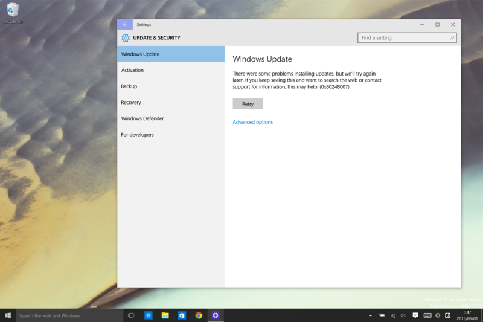
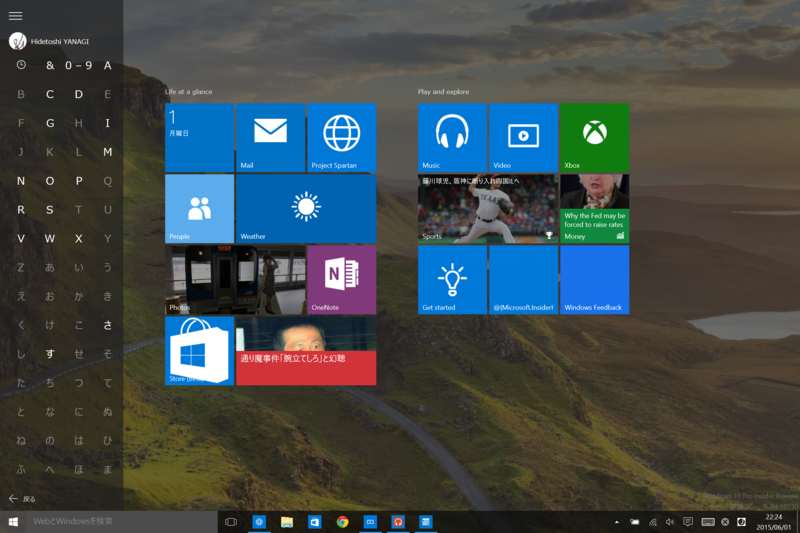
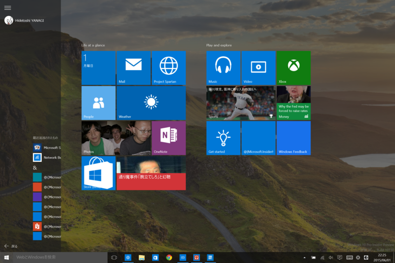
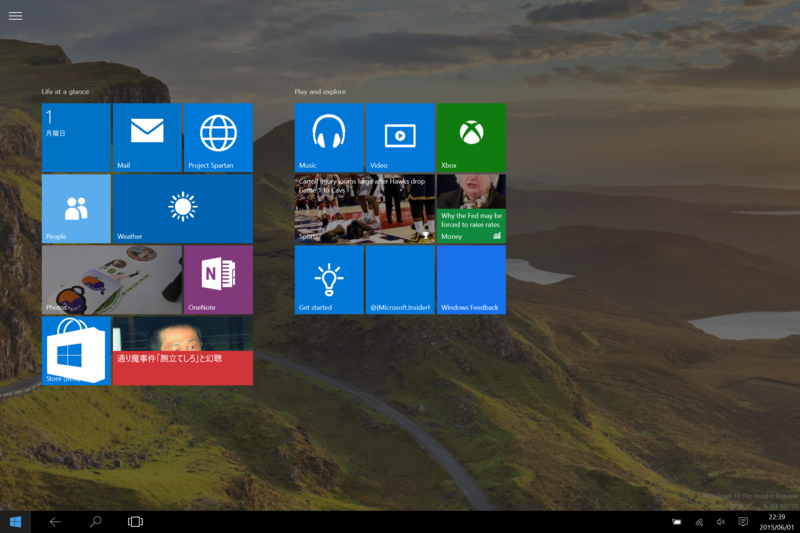

Windows 10 Insider Preview Build 10130
公開日：

またアップデートに失敗した（0x80248007）。さいわい Fix it が用意されていたので、それを適用してクリア。
Windows 10 の出荷日は 7/29 でキマリなのだそうだけど（デスクトップ向け。スマートフォン向けは未定だそうだ）、大丈夫なのだろうか。アップデートエラーが続出して Windows 10 への移行の妨げになったりしたら嫌なんだけど。
バグもまだまだ多い。使い始めて数分で何点も見つけた。
たとえば、すべてのアプリ欄でアルファベット・50音の見出しをタップすると、グリッドビューになって他へジャンプできるようになる。

しかし、この画面から戻ると、レイアウトが崩れる。そもそも、このせまっ苦しいすべてのアプリ欄、まったく使う気になれない。なんでせっかくの広い画面を有効活用せず、画面の左側でちまちまフリックだのタップだのしてリストを操作しなければならないのか。Windows 8 → Windows 8.1 になったときも検索結果が全画面ではなく狭いリストに押し込められてしまったときも不満に感じたが……でも、世の中の人の大半がそっちの方がいいというんだから仕方ない。まぁ、ピン留めなんかの機能を活用すれば緩和できるし、そもそもアプリは検索で呼び出す派だからあんまり困らないのだけど。

あと、スタート画面を出した状態で検索を行うと検索ペインが閉じられなくなったり（前のビルドにあった、スタート画面を開くと勝手に検索ペインが現れて閉じなくなる不具合は直った）、アクションセンターがでなくなったりもするが、これは再現性がなかった。ともかく、そういった不具合が枚挙に暇ない。それを全部、あと2カ月弱で直せるんだろうか。出荷するというのだから出荷するのだろうけれど、かなり不安だな。まぁ、全体的にはイイ感じになってきてると思うから、案外すんなりいくのかもしれないけど。

ちなみに、タブレットモードのときに［Windows］ボタンの横に現れる謎の［←］ボタンは、［戻る］ボタンだった。そうわかればなるほど、と思うし、便利でもあるのだけど、もう少し表現の仕方がなかったかとも思う。まぁ、難しいわね。
そのほかの変更は、他のブログとかメディアでも読んでほしい。